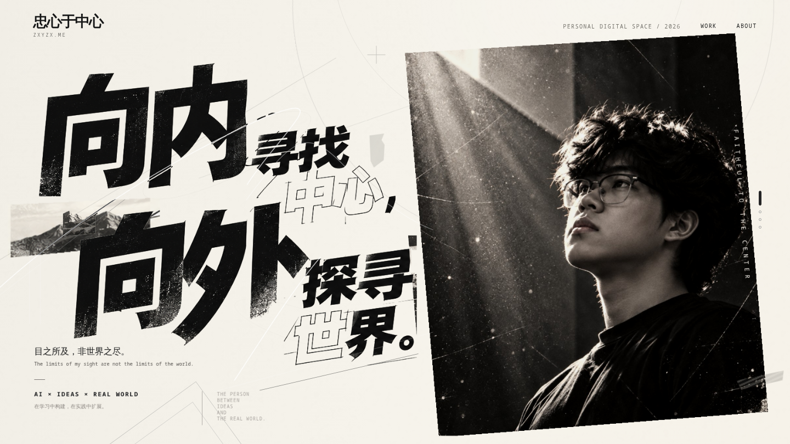
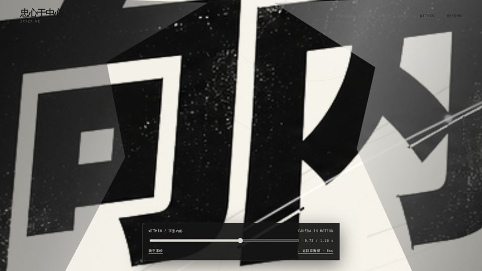
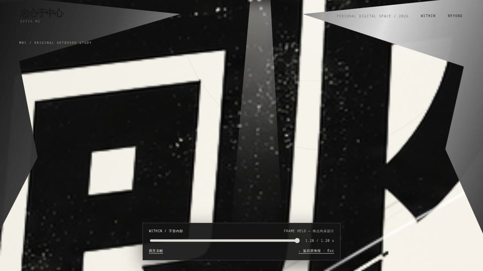
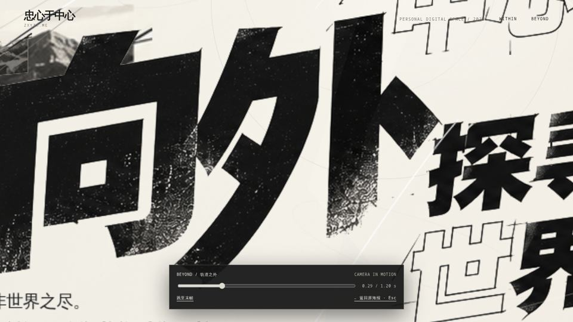
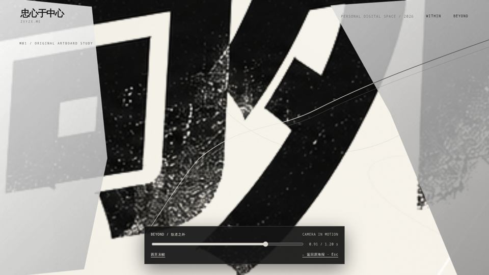
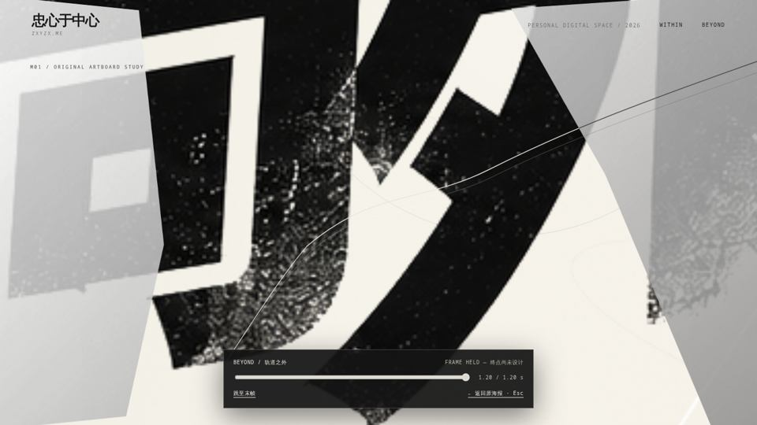
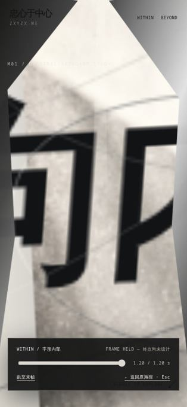
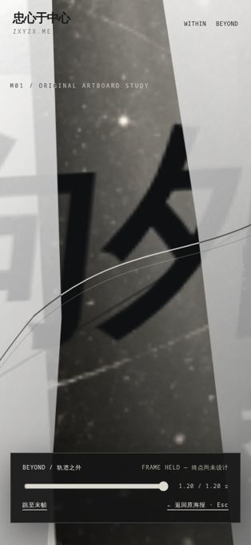

M01 · BEYOND THE FRAME / REAL REACT ENTRY / REVIEW ONLY
向内寻找中心。
向外探寻世界。
真实 M01 首页延展的首次工程审核。只展示前 1.2 秒可交互穿越；没有重绘首页、没有独立终点海报，也没有修改 zxyzx.me。
打开可点击的 React 预览阅读实现与验收记录SOURCE · APPROVED LIVE POSTER

STATIC REFERENCE: 已与正式站点进行 1440 × 810 像素级对照，差异 0。
01 / WITHIN · 向内
直接穿入原有破损汉字。原有油墨边缘和旧纸裂隙延展为动态空间开口；终点未设计。



02 / BEYOND · 向外
从原始轨道路径出发，延长同一 SVG 曲线，纸面开始向空间分离；未进入新城市或项目卡片。



03 / MOBILE · 单独检查


SOURCE COMMIT: b6f27dda · BASELINE: 6f4b943 · BRANCH: feat/m01-within-beyond-real-transition-v1 · PRODUCTION: UNCHANGED